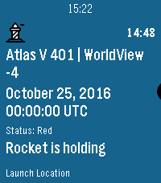
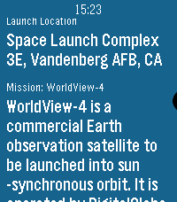

Hardware: Emery
 Have you ever wanted to know when those pillars of ingenuity are destined to leave the bonds of earth's gravity in a blaze of glory? With Liftoff, now you can!
Liftoff is a timeline-filler app that uses the free API available at launchlibrary.net to give users the ability to see at a glance when and where a rocket launches, and see the rocket's mission. Liftoff also provides handy reminders, at 15 minutes before and at the expected launch time, to let you know when a launch happens.
Liftoff isn't isolated to the progression of the United States. It can see the liftoff times of any rocket, anywhere (that's publicly available, that is). And if you don't want to see rockets from a specific country? No worries! The configuration page provides you the ability to select from at least 16 different locations, of which you can subscribe and unsubscribe to with ease.
Liftoff is powered by LaunchLibrary, a free API that allows the quick access of reliable information, maintained by a volunteer community.